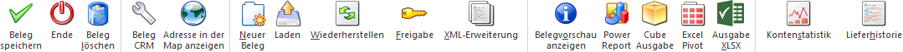
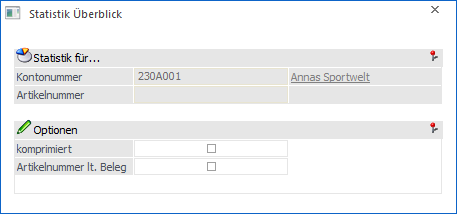
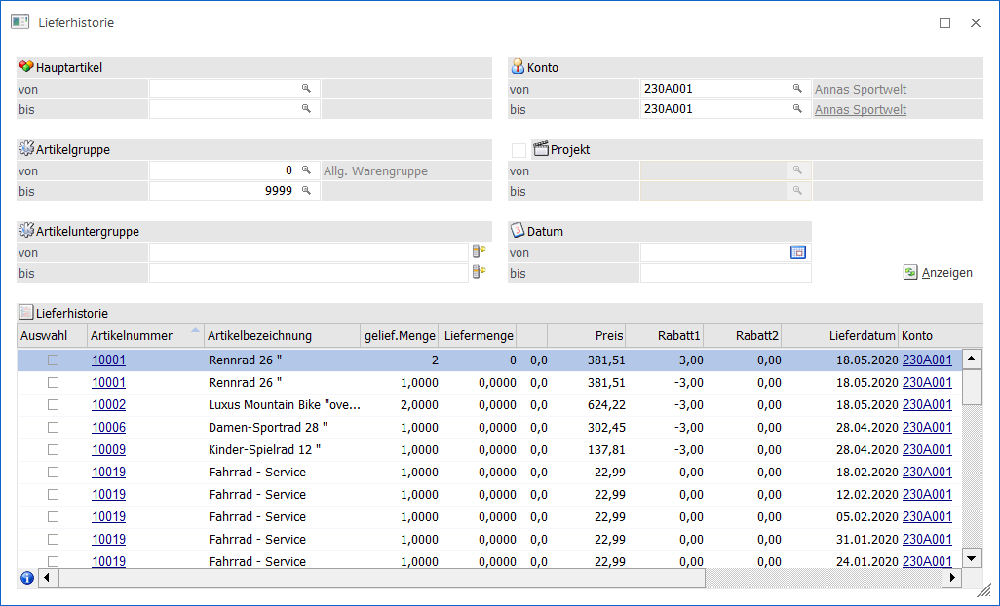

Im Menüpunkt…
1 WinLine FAKT
1 Erfassen
1 Belegerfassung
1 Belege erfassen
… können Beleg erfasst werden, wobei jeder Beleg 4 Stufen durchlaufen kann (Verkauf: Angebot, Auftrag, Lieferschein, Faktura / Einkauf: L.Anfrage, L.Bestellung, L.Lieferschein, L.Faktura).
Beim Druck bzw. Rechnen der einzelnen Belege, werden dabei die einzelnen Stammdatenbereiche und Bewegungsdaten aktualisiert.
Ø 1. Stufe Angebot / L.Anfrage
Ø 2. Stufe Auftrag / L.Bestellung
Erzeugung der Rückstandsliste (Artikelbedarfsvorschau)
Ø 3. Stufe Lieferschein / L.Lieferschein
Aktualisierung der Rückstandsliste (Artikelbedarfsvorschau)
Lagerupdate
Ø 4. Stufe Faktura / L.Faktura
Provisionsabrechnung
Verkaufsstatistik
Artikel- und Kundenupdate
Bereitstellung der FIBU- und KORE-Daten
Hinweis
Wird eine Stufe übersprungen, so werden die Werte automatisch bei der nächsten bearbeiteten Belegstufe aktualisiert.

Die Belegerfassung ist in mehrere Register unterteilt, welche in den nachfolgenden Kapiteln detailliert beschrieben werden:
ü Register "Kopf"
Über das Register
"Kopf" können neue Belege erstellt, editiert oder umgewandelt werden.
ü Register "Zusatz"
In dem Register
"Zusatz" können weitere Informationen zu dem Beleg erfasst bzw. editiert
werden.
ü Register "Text"
In dem Register
"Text" kann ein Beleg mit zusätzlichem Informationstext versehen werden.
ü Register "Mitte"
In dem Register
"Mitte" können die Belegzeilen des Belegs erfasst bzw. editiert werden.
ü Register "Detailinfo"
In dem
Register "Detailinfo" werden weitere Informationen - bezogen auf die aktuelle
Belegzeile - angezeigt.
ü Register "Quick"
In dem Register
"Quick" kann die Erfassung des Belegs in Form einer Formularansicht "live"
erfolgen.
ü Register "Optionen"
In dem Register
"Optionen" kann u.a. eingestellt werden, welche Informationen während des
Belegerfassens zusätzlich zur Verfügung stehen sollen.
ü Register "Vertreter"
In dem
Register "Vertreter" werden die Vertreterjournalzeilen des Belegs
ausgewiesen.
ü Register "Offene Posten"
In dem
Register "Offene Posten" kann der Offene Posten, welcher für die WinLine FIBU
erzeugt wird, angepasst werden.
ü Register "Zahlung"
In dem Register
"Zahlung" kann eine Faktura sofort ausgeglichen oder für z.B. Aufträge eine
Vorauszahlung getätigt werden.
ü Bereich "Speichern"
Nach Abschluss
der Erfassungsarbeiten kann die Bearbeitung des Belegs in diesem Bereich
abgeschlossen werden.
Buttons

Die folgenden Buttons stehen in allen Registern zur Verfügung. Eventuell zur Verfügung stehende Sonderbuttons werden in den jeweiligen Kapiteln der Register beschrieben.
Ø Beleg speichern
Durch Drücken des Buttons "Beleg speichern" bzw. der Taste F5 wird in den Bereich Speichern gewechselt, in welchem man durch nochmaliges Drücken des "Beleg speichern"-Buttons das Speichern, Rechnen oder Drucken des Belegs starten kann.
Ø Ende
Mit dem Button "Ende" bzw. der Taste ESC wird das Fenster geschlossen und alle getätigten Eingaben verworfen.
Ø Beleg löschen
Durch Anklicken des Buttons "Löschen" wird der Beleg gelöscht bzw. storniert (nähere Informationen bezüglich der Stornierung eines Belegs entnehmen Sie bitte dem WinLine FAKT-Handbuch, Kapitel Beleg stornieren).
Ø Beleg CRM
Mit Hilfe des Buttons "Beleg CRM" kann in das Fenster "Belege - CRM-Ansicht" gewechselt werden. Dort ist es möglich bestehende CRM-Fälle des Belegs zu betrachten, neue Fälle zu erfassen oder bestehende Fälle mit dem Beleg zu verknüpfen bzw. die Verknüpfungen zu entfernen.
Ø Adresse in der Map anzeigen
Durch Anwahl des Buttons "Adresse in der Map anzeigen" wird im Standard-Browser das Kartenmaterial von Google Maps geladen und als Suchanschrift die Daten des Personenkontos vorbelegt. Welches Konto hierbei übergeben werden soll, kann mit Hilfe eines Auswahlmenüs entschieden werden:
ü Rechnungsadresse in der Map
anzeigen
Es werden die Daten des Rechnungsempfängers dargestellt.
ü Lieferadresse in der Map
anzeigen
Es werden die Daten der Lieferadresse dargestellt.
ü Zusatzadresse in der Map
anzeigen
Es werden die Daten der Zusatzadresse in der Map dargestellt.
Hinweis
Diese Auswahl steht nur zur Verfügung, wenn dem Beleg eine Zusatzadresse zugeordnet wurde (siehe Register "Zusatz").
Ø Neuer Beleg
Wenn während der Erfassung eines Beleges ein weiterer Beleg vom aktuellen Benutzer erfasst werden soll, so kann durch Drücken des Buttons "Neuer Beleg" der aktuell im Zugriff befindliche Beleg geparkt werden. Dabei wird der Beleg in eine mesonic-interne Zwischenablage kopiert und die Erfassungsmaske initialisiert.
Hinweis 1
Wird ein Beleg über die Funktion "Beleg bearbeiten" aus einem FIBU-Stapel aufgerufen, so steht die Funktion "Neuer Beleg" nicht zur Verfügung
Hinweis 2
Mit Hilfe der Tastenkombination STRG + Button "Neuer Beleg" wird eine neue Instanz geöffnet, in welcher direkt die Belegerfassung gestartet wird.
Ø Laden
Über den Button "Laden" können geparkte Belege jederzeit wieder aufgerufen werden.
Hinweis
Wird ein Beleg über die Funktion "Beleg bearbeiten" aus einem FIBU-Stapel aufgerufen, so steht die Funktion "Laden" nicht zur Verfügung.
Ø Wiederherstellen
Durch Drücken dieses Buttons können "temporäre" Änderungen wieder zurückgesetzt werden. D.h. Änderungen, die im gerade geladenen Beleg durchgeführt wurden, werden verworfen und der Beleg im Ursprungszustand neu geladen.
Ø Freigabe
Durch Anklicken des Buttons "Freigabe" kann der Freigabestatus des Belegs verändert werden.
Ø XML-Erweiterung
Über den Button "XML-Erweiterung" können zusätzliche Informationen zum Beleg in einer XML-Struktur erfasst werden (nähere Informationen hierzu entnehmen Sie bitte dem WinLine Allgemein-Handbuch, Kapitel "XML-Erweiterung").
Ø Belegvorschau
Durch Anklicken des Buttons "Belegvorschau" kann der Beleg in einer Belegvorschau angezeigt werden.
Hinweis
Der Name des hierfür genutzten Formulars setzt sich aus P02WxxyyPV zusammen. Für "xx" wird die Belegstufe eingesetzt (z.B. "44" für "4 - Faktura") und für das "yy" das gewählte Listbild (Register Zusatz). Wird im Listbild in der Belegstufe "4 - Faktura" z.B. ein "S" eingetragen, so würde auf das Formular "P02W44SPV" zugegriffen werden.
Ø Power Report
Durch Drücken des Buttons "Power Report" werden die erfassten Belegzeilen (nur Zeilen des Typs "1 - Artikel" und "6 - Gutschrift") auf Basis von Cube-Daten grafisch dargestellt. Die Ausgabe ist individuell anpassbar und erfolgt in der Form von "Widgets", die unterschiedlichste Darstellungen ermöglichen.
Hinweis
Alternativpositionen (Hinterlegung 1 bis 9 in der Spalte "Alternativposition") werden ebenfalls nicht angezeigt.
Ø Cube Ausgabe
Durch Anwahl des Buttons "Cube Ausgabe" werden die erfassten Belegzeilen in Form einer Cube-Ansicht angezeigt. Hierbei werden nur Zeilen des Typs "1 - Artikel" und "6 - Gutschrift" berücksichtigt.
Hinweis
Alternativpositionen (Hinterlegung 1 bis 9 in der Spalte "Alternativposition") werden ebenfalls nicht angezeigt.
Ø Excel Pivot
Durch Anwahl des Buttons "Excel Pivot" werden die erfassten Belegzeilen in Form einer Pivot Ausgabe in Microsoft Excel (2007 oder höher) angezeigt. Hierbei werden nur Zeilen des Typs "1 - Artikel" und "6 - Gutschrift" berücksichtigt.
Hinweis
Alternativpositionen (Hinterlegung 1 bis 9 in der Spalte "Alternativposition") werden ebenfalls nicht angezeigt.
Ø Ausgabe XLSX
Durch Anwahl des Buttons "XLSX Ausgabe" werden die erfassten Belegzeilen in Form einer XLSX-Datei ausgegeben. Hierbei werden nur Zeilen des Typs "1 - Artikel" und "6 - Gutschrift" berücksichtigt.
Hinweis
Alternativpositionen (Hinterlegung 1 bis 9 in der Spalte "Alternativposition") werden ebenfalls nicht angezeigt.
Ø Kontenstatistik
Durch Anklicken des Buttons "Kontenstatistik" erhält man eine Übersicht über die Verkaufszahlen.
Hinweis
Über das geöffnete Fenster "Statistik Überblick" kann die Auswertung geändert werden (z.B. zur Darstellung einer komprimierten Übersicht).

Ø Lieferhistorie
Durch Anwahl des Buttons "Lieferhistorie" werden die bisherigen Lieferungen des Personenkontos anzeigt. Basis hierfür sind alle bisherigen Lieferscheine bzw. Fakturen, die an diesen Kunden ausgestellt wurden bzw. vom Lieferanten gekommen sind.

Folgende Funktionen sind möglich bzw. Informationen werden angezeigt (nähere Informationen entnehmen Sie bitte dem WinLine FAKT-Handbuch, Kapitel Lieferhistorie):
ü Die Eingrenzung der Anzeige kann detaillierter erfolgen - z.B. auf eine bestimmte Artikelgruppe, Artikelnummer, Artikeluntergruppe oder einen bestimmten Datumsbereich.
Hinweis
Wenn Selektionskriterien verändert wurden, kann die Tabelle mit Hilfe des Buttons "Anzeigen" aktualisiert werden.
ü Neben der Anzeige der Artikelnummer, dem damaligen Preis, Rabatt, dem Lieferdatum und der Laufnummer des Beleges wird vor allem aber auch die Menge angezeigt (Spalte "gelief. Menge"), die damals geliefert wurde.
ü In der Spalte "Liefermenge" kann die Menge eingeben werden, welche DIESMAL geliefert werden soll.
ü Sobald der "Ok"-Button bestätigt wird, werden alle Artikelzeilen, bei denen entweder in der Spalte "Liefermenge" ein Wert steht oder die Checkbox in der Spalte "Auswahl" gesetzt ist, automatisch in den aktuellen Beleg übernommen.
Hinweis
Eine Artikelzeile kann auch durch einen Doppelklick in die Belegmitte übernommen werden.
ü Durch Drücken der Taste "Beleginfo" wird der Beleg, mit dem die Artikel damals ausgeliefert wurden, nochmals am Bildschirm angezeigt.
Hinweis
Diese Funktion ist vor allem im Telefonverkauf interessant, wo aktuelle und vor allem schnelle Informationen Voraussetzung für einen erfolgreichen Verkauf sind (nähere Informationen hierzu entnehmen Sie bitte dem Kapitel "Telefonverkauf").
Hinweis
Weitere Einstellungen zur Anzeige der Lieferhistorie können mittels des Buttons "Optionen" eingeblendet werden.